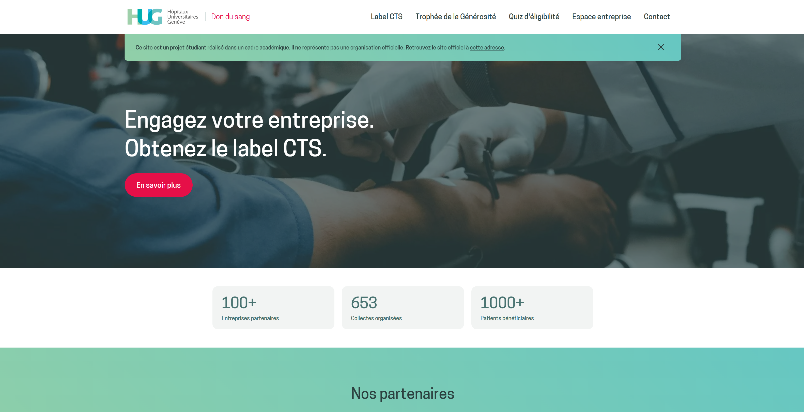

Blood Donation
HUG
Projet d'intégration d'un mois réalisé en collaboration directe avec les Hôpitaux Universitaires de Genève (HUG), concevant une plateforme web pour encourager et faciliter le don du sang.

Un mandat en conditions réelles.
Ce projet s'est déroulé dans le cadre d'un cours d'intégration intensif d'un mois. En collaboration directe avec les Hôpitaux Universitaires de Genève (HUG), la mission consistait à imaginer une expérience numérique incitant le grand public à franchir le pas du don du sang.
Le défi dépassait le simple cadre technique : il fallait appréhender les codes de la communication en santé publique, déconstruire les craintes légitimes des donneurs potentiels et clarifier les critères d'éligibilité.
Mes contributions.
J'ai participé à l'ensemble du cycle de conception : immersion dans la problématique, élaboration de personas, prototypage interactif sur Figma et intégration front-end du site web.
Du besoin au produit digital.
Comprendre le public cible
Identifier les freins psychologiques et organisationnels (manque de temps, appréhension de la piqûre, méconnaissance des lieux de collecte) pour apporter des réponses concrètes et rassurantes.
Stratégie de communication
Adopter un ton bienveillant et positif, axé sur l'impact humain du geste, tout en proposant un questionnaire d'éligibilité interactif et instantané.
Conception de l'interface.
[AJOUTER WIREFRAMES / PARCOURS UTILISATEUR]
[CAPTURE UI 1]
[CAPTURE UI 2]
Technologies & Outils.
Ce que j'ai appris.
Travailler avec un partenaire institutionnel de santé m'a permis de comprendre l'exigence d'accessibilité et de clarté dans la formulation de messages d'intérêt public.